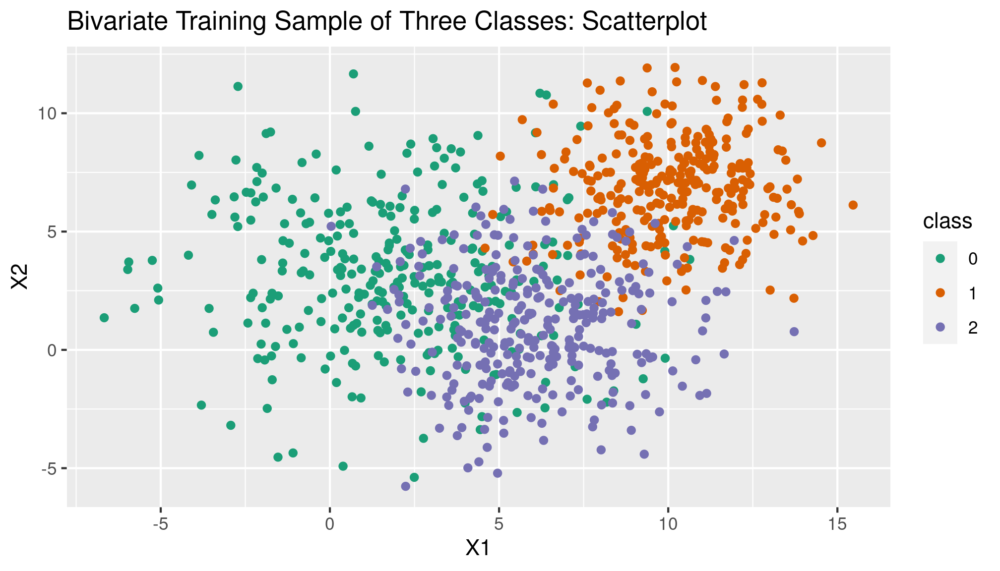

Data Generation
This example uses the tidyverse and MASS packages.
library(tidyverse)
library(MASS)We’ll generate data with three possible outcome classes (coded as 0, 1, and 2) with two independent variables/predictors.
We’ll use MASS’s mvnorm function to sample from a multivariate normal distribution. Throughout this example I’ll refer to the first variable as X1 and the second variable as X2. For each class we’ll construct a vector of means for X1 and X2, randomly sampled integers between 1 and 10:
X1_means <- sample.int(10, 3, replace = FALSE)
X2_means <- sample.int(10, 3, replace = FALSE)
pop_mean_c0_X1 <- X1_means[1]
pop_mean_c1_X1 <- X1_means[2]
pop_mean_c2_X1 <- X1_means[3]
pop_mean_c0_X2 <- X2_means[1]
pop_mean_c1_X2 <- X2_means[2]
pop_mean_c2_X2 <- X2_means[3]
mu_c0 <- c(pop_mean_c0_X1, pop_mean_c0_X2)
mu_c1 <- c(pop_mean_c1_X1, pop_mean_c1_X2)
mu_c2 <- c(pop_mean_c2_X1, pop_mean_c2_X2)As noted above, QDA does not assume that the class covariance matrices are identical so instead of creating one randomly generated covariance matrix we will create one for each outcome class. For this example, we’ll randomly choose class-level correlations and class-level variances (between 1 and 10).
pop_c0_corr <- runif(1, 0, 1)
pop_c1_corr <- runif(1, 0, 1)
pop_c2_corr <- runif(1, 0, 1)
pop_var_c0 <- runif(1, 1, 10)
pop_var_c1 <- runif(1, 1, 10)
pop_var_c2 <- runif(1, 1, 10)Just like in the multivariate LDA example we’ll generate 300 sample observations for each class, once for a training set and once for a test set. We could use the same process as in the multivariate LDA example, but we can be more efficient. Using a loop with the get and assign functions, we can variably refer to our class-level correlations and variances as well as variably generate our class covariance matrices and class sample data sets.
n <- 300
for (i in 0:2) {
class <- paste("c", i, sep = "")
class_var <- paste("pop_var", class, sep = "_")
class_corr <- paste("pop", class, "corr", sep = "_")
mu = paste("mu", class, sep = "_")
temp_sigma <- matrix(c(get(class_var), get(class_corr),
get(class_corr), get(class_var)), 2, 2)
temp_train_data <- mvrnorm(n = n,
mu = get(mu),
Sigma = temp_sigma)
temp_test_data <- mvrnorm(n = n,
mu = get(mu),
Sigma = temp_sigma)
assign(paste(class, "sigma", sep = "_"), temp_sigma)
assign(paste(class, "train", sep = "_"), temp_train_data)
assign(paste(class, "test", sep = "_"), temp_test_data)
}Now all that’s left is to bind the class training and test data together.
train_sample_df <- bind_rows(
tibble(y = 0,
X1 = c0_train[,1],
X2 = c0_train[,2]),
tibble(y = 1,
X1 = c1_train[,1],
X2 = c1_train[,2]),
tibble(y = 2,
X1 = c2_train[,1],
X2 = c2_train[,2])
)
test_sample_df <- bind_rows(
tibble(y = 0,
X1 = c0_test[,1],
X2 = c0_test[,2]),
tibble(y = 1,
X1 = c1_test[,1],
X2 = c1_test[,2]),
tibble(y = 2,
X1 = c2_test[,1],
X2 = c2_test[,2])
)Generally, our data here will look a lot like the data in the multivariate LDA example: three clouds of data points, one for each class, except that in this case the clouds may not be similarly-shaped since each comes from distributions with distinct covariance matrices. We can see this with a simple scatterplot of the training data.
train_sample_scatter <- ggplot(train_sample_df) +
geom_point(aes(x = X1, y = X2, color = as.factor(y))) +
scale_color_brewer(palette = "Dark2", name = "class") +
labs(title = "Bivariate Training Sample of Three Classes: Scatterplot")
train_sample_scatter